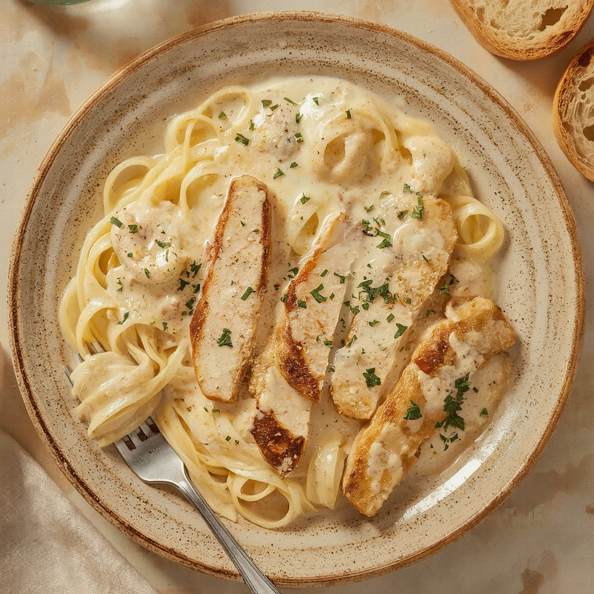

Chicken Alfredo

Home
Description
Chicken Alfredo is a rich, creamy pasta dish featuring fettuccine noodles
tossed in a garlicky, cheesy Alfredo sauce topped with Cajun-seasoned,
pan-seared chicken breast. The pairing of tender pasta and flavorful
chicken creates a comforting, crowd-pleasing meal perfect for family
dinners or entertaining guests.
This dish has its roots in early 20th-century Rome, where Alfredo di Lelio
first prepared a simple sauce of butter and Parmesan cheese for his
postpartum wife. The original recipe has since evolved, especially in
Italian-American cuisine, to include heavy cream, resulting in the smooth,
indulgent Alfredo sauce we know today.
Ingredients
- 2 10-12 ounce boneless skinless chicken breasts
- 3 tablespoons olive olive
- 2 finely minced garlic cloves
- 1 peeled small diced shallot
- 1 ½ cups heavy whipping cream
- 1 cup grated parmigiano Reggiano
- coarse salt and freshly cracked pepper
- pasta water
Steps
- Carefully thinly slice the chicken breasts in half widthwise.
- Season the breasts on both sides with salt and pepper.
-
Add 2 tablespoons of oil to a rondeau or large pot and heat over high
heat until it lightly smokes.
-
Place the chicken breast and cook for 4 to 5 minutes. Flip it over and
cook over medium heat for 4 to 5 minutes or until well browned on both
sides and cooked throughout. Set the chicken to the side.
-
Add the garlic and shallot to the pan and the remaining 1 tablespoon of
olive oil, and cook for 30 to 45 seconds.
-
Pour in the whipped cream and cook over medium heat for just 2 to 3
minutes to heat it up. Next, stir in the cheese until thoroughly
combined and thick over low to medium heat, which takes about 3 to 4
minutes. Season with salt and pepper and set it to the side.
-
Add the pasta to a large pot of boiling salted water and cook the pasta
according to the package. Be sure to stir occasionally.
-
Drain the pasta and add it to the pan with the sauce, tossing until
coated. You may need to add a ladle or two of pasta water to thin out
the pasta sauce so that it coats the pasta evenly.